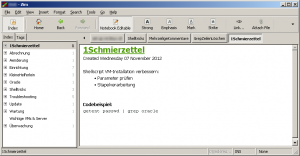

Ich hatte ja kurz erwähnt, dass ich den Job gewechselt habe und damit meine Auszeit begründet. Die ist jetzt deutlich früher als geplant vorbei. Zwar werde ich wohl nicht mehr die vorher von mir etablierten 2 Posts pro Woche erreichen, aber zumindest hin und wieder einen Eintrag hinbekommen.
Mit meinem Jobwechsel kamen viele neue Aufgaben, Abläufe und Prozesse auf mich zu. Doch wie merkt man sich diese am Besten, besonders wenn man ein so behäbiges Gedächtnis hat wie ich? Einige Leute schreiben sich alles auf einen Block oder legen sich Dutzende von Dateien oder eine große als Nachschlagewerk an. Ich halte von all diesen Praktiken nichts. Ein Block kann nicht effizient durchsucht werden, viele kleine Dateien sind mir zu unübersichtlich und eine große zu kompliziert zu formatieren, wenn mal neue Unterpunkte hinzukommen. Deswegen entschied ich mich für ein Desktopwiki, namentlich das OpenSource Programm Zim.

Wie bei einem "echten" Wiki kann ich hier beliebig viele Seiten und dazugehörige Unterseiten erstellen und so eine überschaubare Hierachie erlangen. Genau wie von einem Webwiki gewohnt kann ich hier Bilder einpflegen oder andere Dateitypen an einzelne Seiten anhängen. Weiterhin gibt es rudimentäre Formatoptionen in Form von Überschriften, fetter oder kursiver Schrift, etc. Mir waren besonders nummerierte und nicht nummerierte Listen sowie eine Abgrenzung von Code und Anleitung wichtig, die ich über Verbatim-Formattierung erreichen konnte.
Weiterhin super: Das Programm gibt es für Linux, Windows und mit etwas Mühe (selbst kompilieren) auch für Mac OS, der Vorteil eines Open Source Programms mit einer gewissen Nutzerbasis. Außerdem gibt es zumindest für Windows eine portable Version, was mir immer gefällt, da man sich die Software dann auf einen USB-Stick oder in die Cloud legen kann, um sie so immer verfügbar zu haben.
Vorher hatte ich noch das Notizprogramm Cuecards 2000 ausprobiert, doch das gefiel mir nicht. Die Ausrichtung nur auf Windows, die viel zu stark eingeschränkten Formatoptionen und das Datenformat (Access) haben das Programm für mich disqualifiziert. So sieht die Baumstruktur meines Wikis übrigens momentan aus:
Aber das waren sicherlich nicht die letzten Einträge. :-P
{kind=link}
{kind=link}